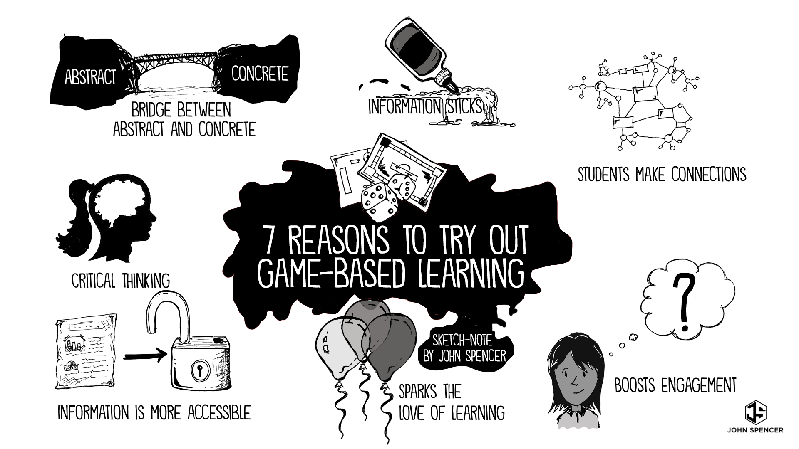

Game-Based Learning
Digital Game-Based Learning Lessons
What is Game-Based Learning?
Game-Based Learning (GBL) describes an approach to teaching, where students explore relevant aspect of games in a learning context designed by teachers. Teachers and students collaborate in order to add depth and perspective to the experience of playing the game. Good game-based learning applications can draw us into virtual environments that look and feel familiar and relevant.
Below is a video which explains more about game-based learning.
Within an effective game-based learning environment, we work toward a goal, choosing actions and experiencing the consequences of those actions along the way. We make mistakes in a risk-free setting, and through experimentation, we actively learn and practice the right way to do things. This keeps us highly engaged in practicing behaviors and thought processes that we can easily transfer from the simulated environment to real life. While similar, is a different breed of learning experience. Gamification takes game elements (such as points, badges, leaderboards, competition, achievements) and applies them to a non-game setting. It has the potential to turn routine, mundane tasks into refreshing, motivating experiences.
What is Digital Game-Based Learning?
Ditigal Game-Based Learning (DGBL) started out as an instructional strategy that can be embodied through computer-based applications. Through the advancement of learning technologies over the years, DGBL now can be considered a stand-alone learning environment that can address to various levels of learning needs.
Digital game-based learning refers to using actual digital video games as learning tools. The basic idea behind digital game-based learning in the classroom is that, as opposed to isolated tasks such as memorization, quizzing and drilling, digital games help students learn subject matter in context, as part of an interactive system.
Game-based learning should not be confused with gamification. Gamification takes an element of education and replaces it with a game-based element. For instance, a teacher may replace grades with levels or experience points.
Throughout the lesson you will find icons such as the one below. Be sure to click on each one of them and remember you have only 2 attempts. These are self-check questions that aim to give you an opportunity to reflect on your learning. Go ahead and click on the icon below.
What is game-based learning? (2014). Retrieved from https://www.youtube.com/watch?v=Uj_8C2L9bXI&feature=emb_title
What are the Benefits of Using Game-Based Leaning?
There seems to be a perception that online gaming has a detrimental impact on children's development. Nothing could be further from the truth, and there are countless–and complex–reasons for this, but it also makes sense at the basic benefits of game-based learning. Of course children should not spend every single second of the day staring at a computer screen. Nevertheless, education and online gaming certainly aren't enemies either. In fact, playing online games may be something which can enhance a child's learning and development. How?
1. Increases A Child's Memory Capacity
Games often revolve around the utilization of memorization. This not only relates to games whereby children have to remember aspects in order to solve the game, memorize critical sequences, or track narrative elements.
2. Computer & Simulation Fluency
This is something which is very important because we live in a world which is dominated by technology. Playing on games via the internet allows children the license to get used to how a computer works and thus it becomes second nature to them. There are websites, such as Cartoon Network games, which provide young children with fun and exciting games which also teach them to utilize the mouse and keyboard properly, not to mention browsing, username and passwords, and general internet navigation.
3. Helps With Fast Strategic Thinking & Problem-Solving
Most games require children to think quickly. Moreover, they have to utilize their logic in order to think three steps ahead in order to solve problems and complete levels. This is great because it is something which helps children in later life as they develop their logic, their accuracy and their ability to think on their feet and outside of the box.
4. Develops Hand-Eye Coordination
 Games that require children to use a gamepad or a keyboard and the mouse to operate the games can help develop hand-eye coordination. Not only does this get them more tuned to how a computer works, but it also helps to develop hand-eye coordination because children have to look at the action on the screen whilst using their hands to control what is happening at the same time.
Games that require children to use a gamepad or a keyboard and the mouse to operate the games can help develop hand-eye coordination. Not only does this get them more tuned to how a computer works, but it also helps to develop hand-eye coordination because children have to look at the action on the screen whilst using their hands to control what is happening at the same time.
5. Beneficial Specifically For Children With Attention Disorders
Research has revealed that online games can actually help children who experience attention disorders. This was concluded by a professor at Nottingham University (CNN covered it here), and is a notion which has been repeated by many in related studies.
6. Skill-Building (e.g. map reading)
A lot of games contain certain aspects which help children with specific skills. For example, a lot of mystery and adventure games contain maps which children will have to read. This obviously helps their map reading skills and practical thinking. Moreover, there are games, such as football management games, which introduce children to managing finances and general project management.
As you can see, there are a whole host of reasons as to why online games can be beneficial for children. Thus, education and gaming certainly aren't enemies; in fact many would say that they are more like best friends.

Go ahead and click on the icon below for some self-check questions.
Hand-Eye Coordination by Celina Jones under Fair Use
Reason to try out Game-Based Learning by John Spencer under Fair Use
6 Basic Benefits Of Game-Based Learning. (2013, March 15). Retrieved October 30, 2019, from TeachThought website: https://www.teachthought.com/technology/6-basic-benefits-of-game-based-learning/
Spencer, J. (2018, July 22). Seven Reasons to Pilot a Game-Based Learning Unit. Retrieved October 30, 2019, from John Spencer website: http://www.spencerauthor.com/game-based-learning/
Current Examples of Game-Based Learning
The content of this page comes from an article by Vicki Davis named Epic Guide to Game-Based Learning.
"Games are fun. We can use them to teach. It isn't that hard. Game based learning excites learning in my classroom. It can ignite your classroom too", says Vicki Davis, a classroom teacher with 15 years of experience teaching high school and has 20 years of experience teaching teachers how to use technology in the classroom.
Welcome to serious games. Despite what some may think about the games, serious games are designed for a purpose. In essence, serious games are not just for entertainment. As shown below, well-designed serious games can teach, educate, and inspire. In summary, serious games done right can engage students and help us become better teachers. Not only do we want our students to be excited about learning but we also want them to be intrinsically motivated. Simply put, intrinsic motivation comes from within. In the final analysis, it is demotivating to "point-ify" everything students do. But in the long run, adding a game based layer to your classroom can get students hungry to win in the classroom and life. Interestingly, as can be evidenced by the kids running to my keyboarding classroom each day, effective game-based learning does release dopamine (which activates the pleasure centers of the brain.) It can become a powerful and positive motivator for this reason. Nevertheless, just because an activity has points and is called a game doesn't make it an effective game-based learning tool any more than putting me in a Doritos bag makes me a chip.
Therefore, we educators need to educate ourselves on game based learning. We should learn how to do it right. We should also learn how to avoid the pitfalls of poorly implemented game based learning. Let's dig deep into the resources, research, and tools that will help you become start using game based learning in your classroom.
School-Wide Game Based Learning
- How Ron Clark divides his school into "houses" for their school-wide year-long competition
- Quest to Learn Academy uses a school-wide game based learning approach.
- What Does It Mean to Have Your Whole Middle School Curriculum Designed Around Games? Author Alexandria Neason writes an article about what is happening at Quest to Learn.
- A Quest for a Different Learning Model on Huffington Post
- District-Wide Game Based Learning Guide
- Atlantis Remixed – this immersive 3D world was once called Quest Atlantis and is perhaps the most comprehensive tool used to teach students a variety of topics. It is fantastic! Bronwyn Stuckey is an expert in this area.
- World of Warcraft in School – Led by Peggy Sheehy who does awesome work in using virtual worlds and games in schools
Websites
- Games for Change – This website and organization sponsors contest to create games for change. You'll find many ideas for game based learning for social good on this site.
- Common Sense Education – formerly Graphite, this organization ranks and evaluations apps, games and activities for kids. I like that they recently added a feature to evaluate the privacy policies and COPPA compliance of websites. A great place to find games.

- Appolicious – This site pretty much evaluations iPhone/iPad games but has lots of them in the index.
- Game Based Learning Insights on the Samsung Insights Website has articles on recent implementations of game based learning in more fields than just K12 including health care, retail, etc.
Competitions
- Builder Bowls – Builder Bowls revolve around a wide range of immersive technologies, including Virtual Reality (VR), Augmented Reality (AR), simulations, video games, caves and domes, 3D printing and robotics.
- Game On – a WordPress plugin used by teacher Kevin Jarrett and others to make their whole classroom a game.
- Classcraft – This is the game tool I use to turn my keyboarding class into a game.
- Rezzly – Used to be 3D Game Lab
- Student Shark Tanks – I wrote this about how we had a competition to see which apps would get funded.
- Drama in the Classroom: 2 Bellringers with Activities – Drama in the classroom can have game-based elements. I use this all the time in my classroom.
- Kahoot – This fun gaming tool is being used for classroom tool and review games everywhere. Students can play as individuals or in team mode.
Science, Technology, Engineering & Math (STEM)
- Reach for the Sun – this game teaches Photosynthesis
- Geocaching: Get Out Into Nature — Geocaching is a game-based nature exploration method. (Pokemon Go uses augmented reality and GPS coordinates, so it is related.)
- Funbrain – This website has many math games. I've used them to help teach my own children math facts.

- How an NBA Board Game is Getting Middle Schoolers to Care about Math – October 2016
Social Studies and Geography
- 10 Civics Games for Change
- Zombie Based Learning to Teach Geography by classroom teacher David Hunter
- News Games for Change
- Mission US: City of Immigrants – go through New York's Lower East Side as a Jewish immigrant from Russia.
- Arab-Israeli Conflict Simulation run by Dr. Jeff Stanzler at the University of MichiganArab-Israeli Conflict Simulation run by Dr. Jeff Stanzler at the University of Michigan
- Cast Your Vote – A Game that helps students understand debates and elections.
Economics & Financial Literacy
- H&R Block Budget Challenge
- Financial Literacy: Make the Money "Real"
Literature and Composition
- Vocabulary and Spelling City – This helped me teach my son his spelling words. Great site!
- Funbrain Reading Games – This website has online books but also just about every grammar game you can imagine.
Go ahead and click on the icon below for some more self-check questions.
Implementation of Game-based Learning in Classroom
Using game-based learning in the classroom helps engage students by directly involving them in the learning process. The result? Improved retention of material, increased student engagement, and an overall enjoyable learning environment. Below is a video that explains one of the ways you can use game-based learning in your classroom.
How can productive struggle foster the learning process in students' classroom experiences? Education researcher and interactive game developer Ki Karou shares a selection of game-based learning strategies that can develop students' capacity for productive struggle. The ultimate goal is to develop our students into curious, tenacious and creative problem solvers.
How to Successfully Implement Classroom Games
So, you've picked an appropriate and engaging classroom game, and your students are bubbling with anticipation. Now, you need to actually put your game to use in the classroom. Follow these steps to ensure success!
1. Have a Concrete Plan in Mind
This sounds obvious, but it's true. Are your students going to play every day or only on certain days? Before or after lectures? For how long? At home or in the classroom? How you administer the game is certainly up to you, but we've found that students are often so eager to play classroom video games that they end up asking for extra home assignments involving these games (yes, you read that correctly — students asking for more homework). In that case, we recommend you get students' parents on board and make sure they're aware that these games are being used as an essential component of their children's coursework.
2. Decide on the Right Format
With the availability of smartphones and handheld devices, digital games are very popular among children and teens; these are an obvious choice for classroom games if your school has a computer lab or in-class devices.
If digital games won't work, you can use other kinds of in-class activities to get students out of their seats and eager to participate, like group labs, in-class presentations, Jeopardy-style assessments, and more. To that end, consider if you'd like your students to work independently or collaboratively. Most students are vocal and active in group work, and this allows them to develop their social and interpersonal skills. But not every size fits all — other students do prefer independent work. And in some classes, group work simply doesn't make sense.
Bottom line? Make sure the format you decide on works for you and your students and is easy to implement.
3. Assess Effectiveness, Gather Feedback, and Iterate
At the end of the day, you need to make sure the games you implement are actually helping students master the content and make progress in your classroom. With educational digital games, it's especially easy if your students have their own accounts and a built-in means of measuring progress and participation, like XP (Experience Points) earned. These metrics usually correlate well to the amount of effort students put into practicing the concepts they learn in class.
Moreover, even though you're the sole authority in your classroom, students should have some say in how they learn. If you find that some students are struggling with the format you've chosen, you should seek feedback from everyone to ensure that your games are working well. For example, if difficulty doesn't scale well and some students are consistently underperforming, you can split your class into tiered groups, where each tier receives challenges and activities that match its level of proficiency.
Below is also a podcast which might give you ideas for using game-based learning in your classroom:
Now, answer the following questions related to implementing GBL in classroom.
Designing and Developing Digital Game-Based in your Class
Below is a checklist which might help you further in creating your lesson plan.
 Click on the icon below to answer questions and start designing and developing GBL for your class.
Click on the icon below to answer questions and start designing and developing GBL for your class.
GameBased Learning Quick Notes by Vicki Davis under Fair Use
Final Assessment
.png) Always keep in mind Pedagogy First, Technology Second. No matter where your school is in its ed-tech journey there is a moment in time where you need to stop and look at what you have in place to ensure student learning is at the heart and a clear and concise plan is in place.
Always keep in mind Pedagogy First, Technology Second. No matter where your school is in its ed-tech journey there is a moment in time where you need to stop and look at what you have in place to ensure student learning is at the heart and a clear and concise plan is in place.
Pedagogy First, Technology Second by Krista Moroder is licensed under Creative Commons Attribution-NonCommercial-ShareAlike 2.0 Generic License
Feedback
As an educational product, this lesson may be further modified for the intended audience. Your feedback would be appericiated and helpful to enhance the lesson.